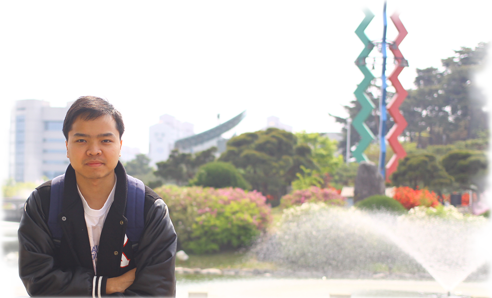

Self Introduction

I am Tuan Nguyen Trung, and I come from Vietnam. Currently I am a second year Master student in the Robotics and Simulation lab, Division of Mechanical Engineering at Korea Advanced Institute of Science and Technology (KAIST), Korea.
What I do
I am researching on computer-based simulation of medical procedure in a robotics laboratory. I am seeking for opportunities to become an expert in computer graphics field, for my passion on art, technology and application. I hope to expand my knowledge on simulation of physically deformable objects.
My interests include physically deformable model, real-time simulation and visual rendering. For detail information, please refer to my current research.